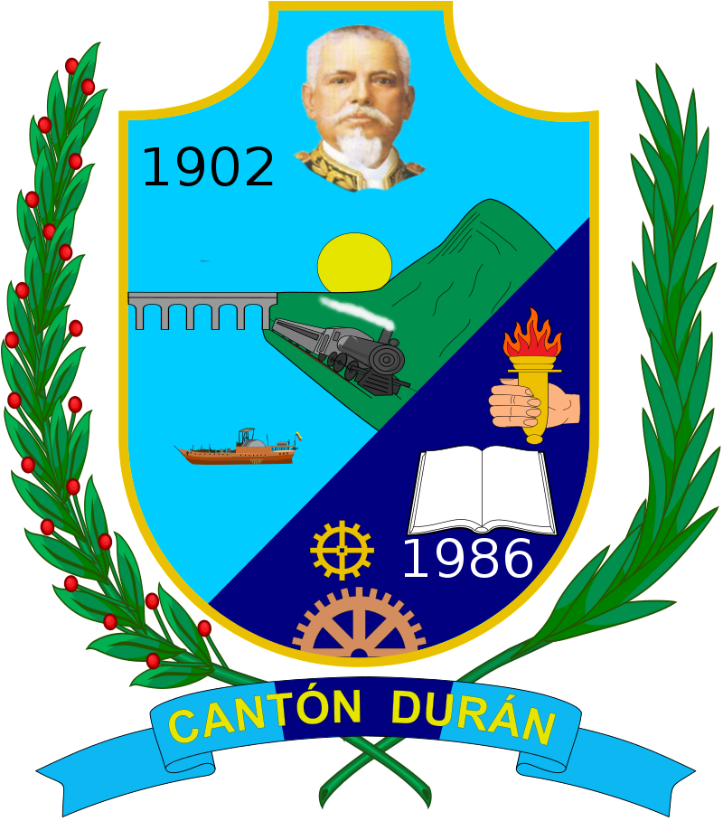
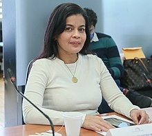
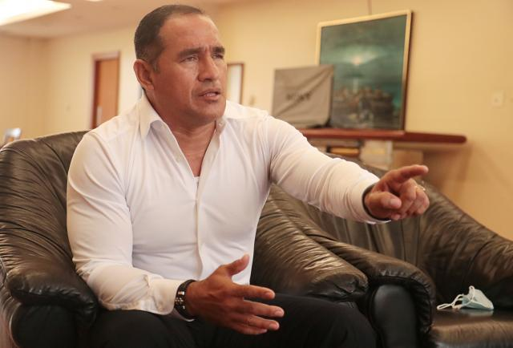
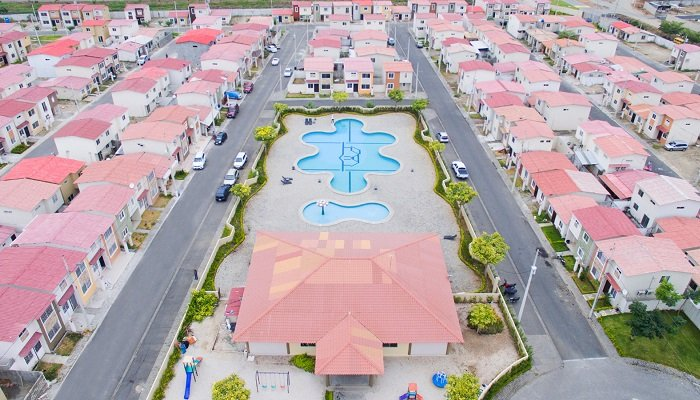

BIOGRAFIAS
León Febres-Cordero Ribadeneyra
León Esteban Francisco Febres-Cordero Ribadeneyra (Guayaquil, 9 de marzo de 1931-ibidem, 15 de diciembre de 2008) fue un político ecuatoriano. Fue dirigente del Partido Social Cristiano de su país; presidente del Ecuador entre los años 1984 y 1988; legislador entre los años 1970 y 1984, y 2002-2004; miembro de la Asamblea Constituyente entre 1966 y 1967; senador entre los años 1968 y 1970; alcalde de Guayaquil en dos períodos, el primero de 1992 a 1996, año en que es reelegido y ocupó el cargo hasta el año 2000.
Se educó en el Colegio Salesiano Cristóbal Colón y viajó a los Estados Unidos a la edad de 16 años, donde completó su secundaria en Charlotte Hall Military Academy y Mercersburg Academy de Pensilvania.Tras ello, obtuvo su título de Ingeniero Mecánico en el Stevens Institute of Technology, en Hoboken (Nueva Jersey), en el año de 1953.
Desempeñó cargos como ejecutivo en importantes empresas de la nación, Cervecería Nacional, Empresa Eléctrica de Guayaquil, Industrial Molinera, Sociedad Anónima San Luis, Sociedad Anónima San Alfonso, Cartonería Ecuatoriana, Papelería Nacional y Textil Interamericana de Tejidos En la actividad gremial incursionó al frente de la Cámara de Industrias de Guayaquil, de la que logró ser tres veces presidente entre los años 1974 y 1980, y de la Federación Nacional de Cámaras de Industrias.

Alexandra Arce
Nació el 31 de julio de 1977 en Guayaquil. Realizó sus estudios superiores en la Universidad Laica Vicente Rocafuerte, donde obtuvo el título de ingeniera comercial.
En las elecciones seccionales de 2009 fue elegida concejala de Durán por el movimiento Alianza PAIS.Durante su tiempo en el cargo se posicionó en contra de las políticas del alcalde Dalton Narváez, del Partido Social Cristiano. En mayo de 2010 realizó una denuncia en la fiscalía contra el alcalde y su madre, la exalcaldesa Mariana Mendieta,por supuestas agresiones físicas a las que habría sido víctima luego de denunciar actos de corrupción cometidos por el alcalde
En las elecciones legislativas de 2013 fue elegida asambleísta en representación del distrito 3 de la provincia de Guayas por Alianza PAIS.En noviembre del mismo año renunció al cargo para participar como candidata a la alcaldía de Durán en las elecciones seccionales de 2014,donde venció al alcalde Dalton Narváez, que buscaba la reelección
Días después de asumir el puesto declaró en emergencia al municipio de la ciudad para que la Contraloría de Estado investigara supuestas irregularidades cometidas por la administración anterior que habrían provocado un perjuicio de más de 9 millones de dólares.
Para las elecciones seccionales de 2019 intentó ser reelegida como alcaldesa, pero perdió la elección.En las elecciones legislativas de 2021 fue elegida asambleísta en representación del distrito 3 de la provincia de Guayas por la alianza UNES

Dalton Narvaéz
Dalton Rafael Narváez Mendieta, nació el 15 de diciembre de 1972, es reconocido por ser un líder innato que ha velado desde siempre por los derechos de los duraneños y ecuatorianos, impulsado por el anhelo de desarrollo y prosperidad para su cantón.

Durán, un cantón del Guayas
El Gobierno Provincial del Guayas se establece jurídicamente en lo
estipulado en la constitución, las leyes, y las demás normas jurídicas
del país. La Constitución de 2008, vigente en la actualidad, establece -en su artículo 238- gobiernos autónomos descentralizados para
cada nivel de gobierno, definiéndolos como entidades que gozan de
autonomía política, administrativa y financiera, y que se rigen por
principios tales como los de solidaridad, subsidiariedad, equidad interterritorial, integración y participación ciudadana. Fue dirigido por
Carlos Luis Morales hasta el día de su deceso el 22 de junio de 2020,
desde esa fecha Susana González asumió como prefecta del Guayas
